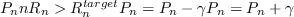

One of the first forms of DSM, IWF is computationally simple, de-centralised, and relatively easy to implement.
The rational of IWF is to limit iteratively perform LC bit-loading and to adapt the power constraints so as to limit the power used in the bundle while maintaining total bundle capacity, thereby lowering the power of cross-talking signals and actually increasing the net bundle data rate greatly when compared to SSMSSMStatic Spectrum Management, but is far from optimal, and is not guaranteed to converge, or settle, on on any result. The general algorithm for IWF is shown in figure 9
Appendix 9:
IWF Algorithm
|  |
Andrew Bolster
2011-05-22